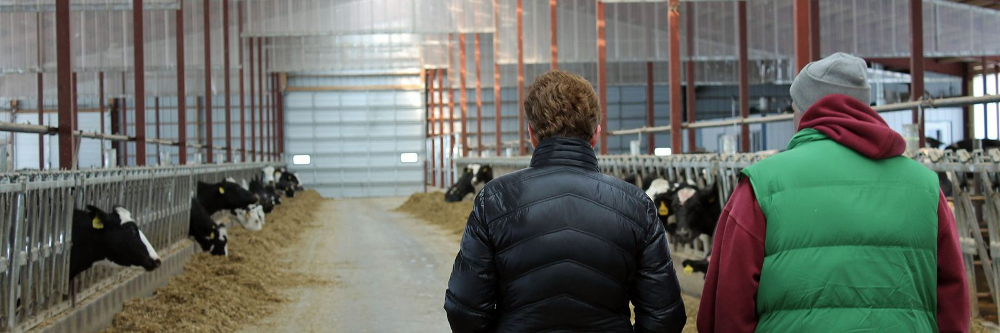

BVD PI testing for cattle and bison
What you don't know will hurt you.
A persistently infected (PI) animal was infected before birth, sheds the virus for life, and is found with one ear notch or blood sample. BVD PI testing is for cattle and bison; goat and sheep herds should call the lab and ask about disease monitoring instead.
The whole-herd program
PI testing pays off as a program, not a one-time check. This is how it runs in a herd that stays clean:
- Screen the herd once, so you know where you stand. Calves under a year old give an ear notch; adults give an ear notch or a blood sample.
- Once a week, notch the calves born since the last box and ship them that same day, so they reach the lab within 48 hours of collection.
- Test every purchased addition before it joins the herd, bulls included.
- If a calf tests positive, test the dam too. A PI dam always produces a PI calf, though most PI calves come from dams that were only briefly infected during pregnancy.
- A positive animal is isolated and either retested or removed on the veterinarian's advice.
- Vaccinate calves and open adults on a schedule Dr. Pearson sets for your herd, so the virus has a hard time spreading if it ever arrives.
Beef herds run the same program at weaning and at purchase. Running a beef herd or bison? See beef and bison herds by mail.
BVD program planner
Put in your herd size to see how many calves a week the program takes, and what each part of it asks of you.
A whole number, 1 to 20,000.
Year-round is usual in a dairy. Seasonal means a calving season of about ten weeks, as in many beef herds.
For 120 breeding females:
- First screen: every animal on the place once, about 120 breeding females plus calves, bulls and replacements. Calves under a year old give an ear notch; adults give an ear notch or a blood sample.
- Calves: roughly 108 a year, about 2 a week. Once a week, notch the calves born since the last box and ship them that same day, so they reach the lab within 48 hours of collection.
- Purchases: test every purchased animal, bulls included, before it joins the herd.
- Positives: isolate the animal and test its dam. It is retested or removed on the veterinarian's advice.
- Vaccination: calves and open adults, on a schedule Dr. Pearson sets for your herd.
- Ship day: the lab is staffed Monday to Friday, so pick a ship day that gets the cold box there on a weekday. The ship-by planner checks the arrival day.
Planning estimate only, based on about nine calves per ten breeding females a year. Call the lab to plan with the numbers from your own herd.
Understanding BVD and persistent infection
What is Bovine Viral Diarrhea virus (BVD)?
The BVD virus is one of the most economically significant viruses affecting both the dairy and beef industries in the U.S. It has been estimated that as many as 70% of BVD virus infections are sub-clinical. These infections may not be readily visible but can be costly by reducing growth, production and reproduction within a herd.
How is BVD transmitted?
Cattle infected with BVD can shed virus through virtually any bodily fluid, making it one of the most contagious diseases in U.S. cattle herds.
What is a persistent BVD infection?
Some calves are born persistently infected (PI) with BVD virus, posing a serious threat to the health of the herd. PI calves are born from a pregnant cow that is exposed to BVD virus during the first 5 months of gestation. These PI calves may be born weak, deformed, or may appear completely normal, yet they always shed large amounts of virus into their environment.
What effect can a PI animal have on the rest of the herd?
In a herd situation, a single PI animal can expose many other pregnant cows that may then produce PI calves of their own. Since a PI animal sheds vast amounts of BVD virus, it can cause a wide array of health problems within a herd or pen. Increased respiratory disease (pneumonia), diarrhea (scours), and reproductive failures (abortions, mummifications, congenital defects) are the main symptoms of cattle challenged with BVD virus.
Testing and prevention
How can I test my herd to see if BVD is already present?
Calves less than 12 months old should be tested by sending a skin (ear notch) sample to our lab. Adult cattle can be tested with either a blood (serum) sample or a skin sample (ear notch) submitted to our lab.
How can I keep BVD from entering my herd?
Control and prevention of BVD in your herd involves a two-pronged attack: PI testing and proper vaccination. Once you have screened your cattle initially for PI, testing all future calves and purchased additions will prevent a PI BVD animal from physically entering your herd. Vaccinating your calves and open adults with several properly timed doses of Express FP10 vaccine will keep the virus from spreading within your herd should they ever be exposed. Call or email us for a specific testing and vaccination plan for your herd.
How much does the PI test cost?
BVD PI testing (skin or blood) is $6.95 per animal. For a large herd, call (715) 653-2201 for a quote. One published study showed that a single PI animal in a dairy herd resulted in further health-related losses of over $35.00 for every other cow in the herd.
How do I obtain a skin or blood sample?
A medium pig ear-notcher works best on the lower aspect of the ear. The notch can be seen from a distance and does not affect the ear flap. Place each skin sample into a separate, labeled tube. Blood samples should be collected into a 3cc or 5cc red-top tube using a new needle for each animal.
The BVD form asks for a skin sample of at least 1/4 inch on all edges. Number each tube in the order of the form, and write the animal ID on it.
Blood for BVD PI testing is drawn from cattle the same way as for pregnancy testing. The tail bleeding guide walks through it one step at a time.
Getting started
A small (2cc) sample of blood from adult cattle can be used in place of an ear notch if desired. Place ear notch or blood samples in an air-tight zip-lock bag prior to shipment. Include ice packs in the box to keep samples cool during transit. Complete the submission form and include it in the shipping box.
Ear notches and BVD blood ship cold. Refrigerate them until you pack, then add frozen ice packs. They must reach the lab within 48 hours of collection. If a cold shipment cannot reach the lab within 48 hours, call first for instructions.
Samples that reach the lab by Wednesday are reported Thursday.
See our shipping instructions and download the test form to mail in with your blood sample or ear notch.
New to ear notching? When you call, Dr. Pearson can talk your crew through it, or your own veterinarian can show them.
Download the BVD PI Test Submission Form
BVD PI Test Submission Form
For blood or ear notch samples
Download PDF, BVD PI Test Submission FormMore animals than lines on the form? Print a second copy. Running low on tubes or needles? Order more on the same form.
First box? Please call our office before your first submission, at (715) 653-2201, or send the new client form. We'd like to meet you. A call settles which supplies you need.